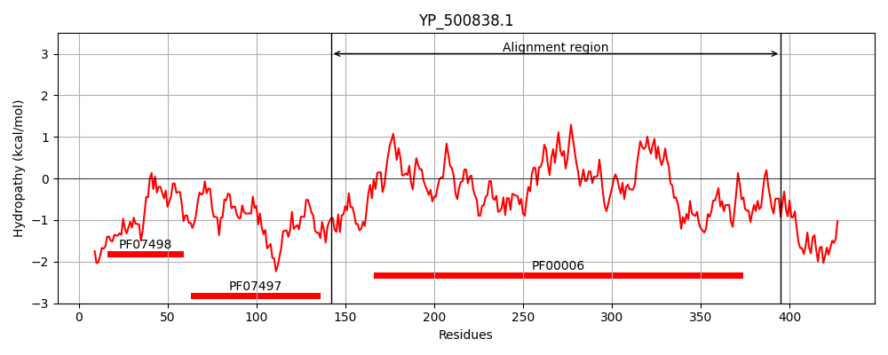
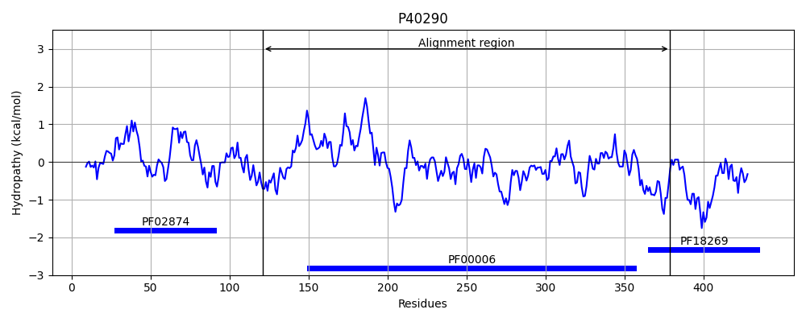
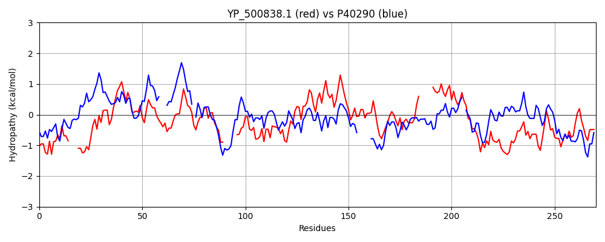

Hit Accession: P40290
Hit TCID: 3.A.6.1.1
Hit Description: gnl|BL_ORD_ID|10341 gnl|TC-DB|P40290|3.A.6.1.1 PROBABLE ATP SYNTHASE YSCN (EC 3.6.1.34) (YOPS SECRETION ATPASE) - Yersinia enterocolitica.
Mach Len: 270
e:0.000000
Query TMS Count : 0
Hit TMS Count: 0
TMS-Overlap Score: 0.000000
Predicted Substrates:CHEBI:8526;protein polypeptide chain
BLAST Alignment:
Score: 209 , Bit scores: 85 bits, E-value: 6.1e-18, Alignment length: 270, Percentage identity: 30
Query: 142 PHFQALTPLYPDERI----KLETEIQNYSTRIMDLVTPIGLGQRGLIVAPPKAGKTSLLKEIANAISTNKPDAKLFILLVGERPEEVTDL------ERSVEAAEVVHSTFDEPPEHHVKVAELLLERAKRLVEIGEDVIILMDSITRLARAYNLVIPPSGRTLSGGLDPASLHKPKAFFGAARNI------EAGGSLTILATALVDTGSRMDDMIYEEFKGTGNMELHLDRKLSERRIFPAIDIGRSSTRKEELLISKSELDTLWQLRNL 395
P A P+Y D KL T + R++D + G GQR I A GK++LL A+ I + + D + + L+GER EV + E + A +V +T D P K + A+ + G+ V++LMDS+TR ARA + L+ G P P + F A + + GS+T L T LV+ G M + + +E + + + L RKL+ +PAID+ RS++R ++SK LR L
Sbjct: 121 PEPAAWYPVYQDAPAPMSRKLITTPLSLGIRVIDGLLTCGEGQRMGIFAAAGGGKSTLL---ASLIRSAEVDVTV-LALIGERGREVREFIESDLGEEGLRKAVLVVATSDRPSMERAKAGFVATSIAEYFRDQGKRVLLLMDSVTRFARAQREI------GLAAGEPPTRRGYPPSVFAALPRLMERAGQSSKGSITALYTVLVE-GDDMTEPVADETRSILDGHIILSRKLAAANHYPAIDVLRSASRVMNQIVSKEHKTWAGDLRRL 379 | Protein Hydropathy Plots: |
|---|
|  |  |
Pairwise Alignment-Hydropathy Plot:
|
|---|
|  |